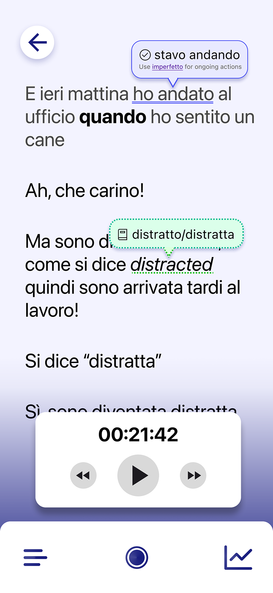
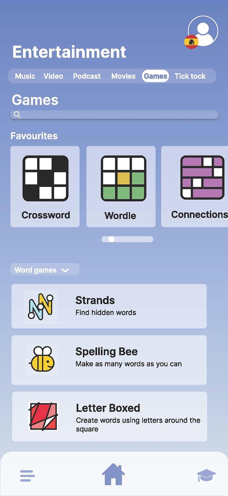
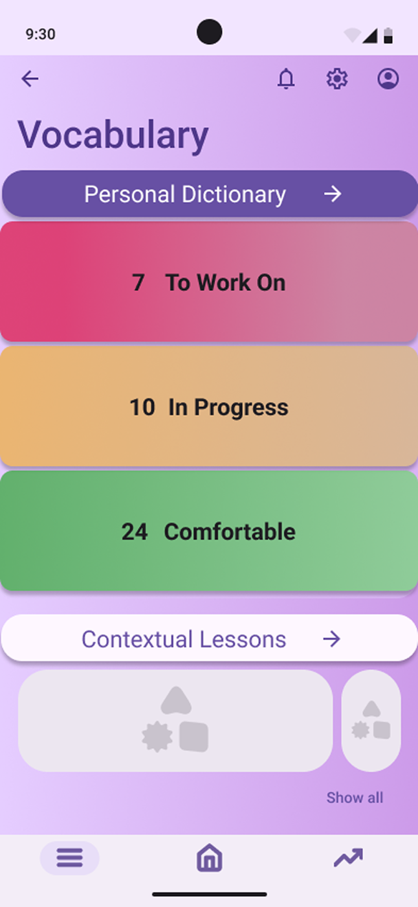
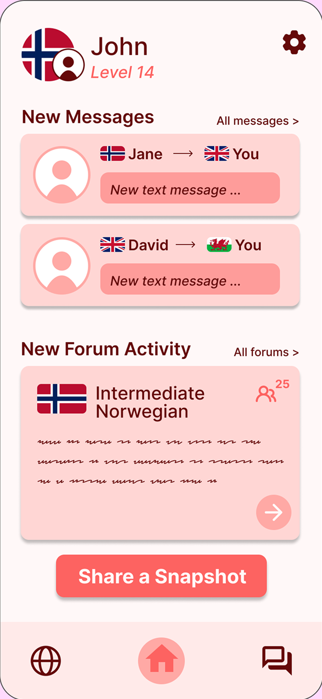

Scripted
Turning real conversations into structured language learning

Overview
Scripted is a mobile app designed to support intermediate language learners in developing conversational fluency through real-time conversations and personalised feedback.
My role
- Led design of the recording experience and interaction flow (solo, group and AI conversations)
- Designed key interfaces including home, recording, summary-first feedback, and AI conversation screens
- Redefined the achievement system based on usability testing (independent extension)
- Contributed to navigation structure, user flows, and iterative decision-making within a collaborative team
The Problem
Intermediate language learners often plateau: they understand grammar and vocabulary but struggle to apply it in real conversations.
Existing tools fall into two extremes:
- Lesson-based apps provide structure but lack real conversational practice
- Community platforms enable conversation but offer little meaningful feedback
As a result, learners lack both consistent practice opportunities and actionable insight into their spoken performance.
Product Strategy
Scripted is an app designed as an accessory to conversational practice for intermediate language learners.
The strategy focused on:
- Supporting real conversations between learners (friends, family, partners)
- Making practice more accessible through optional AI, solo modes and HelloTalk integration
- Providing real-time conversation assistance without disrupting flow
- Creating a system that encourages continued engagement over time
Concept Evolution
We explored four distinct directions to propose a solution to our problem domain, each targeting a different method of language learning.
Recording
Media
Vocabulary
Community
- Recording app: Capturing real conversations and generating transcripts
- Media immersion: Learning through curated content such as films, music, games and short-form media
- Vocabulary trainer: Focusing on saving and revisiting difficult words for targeted practice
- Community platform: Enabling social interaction through messaging and daily shared content
Key Insight
Initial testing revealed that while all concepts addressed aspects of learning, none fully supported real conversational fluency.
The recording concept was the strongest, but limited by reliance on conversation partners.
Final Direction
We evolved the solution by combining:
- Real conversations recorded to produce a transcript (later extended to include AI and solo practice modes)
- HelloTalk integration rather then recreating community features
- Short form lessons based on the transcript insights
This expanded accessibility while maintaining focus on real conversational interaction.
Core Experience
Recording a Conversation
Scripted is built around real-world conversation practice. The core experience was designed to support users during live interaction without interrupting conversational flow.
The challenge was balancing:
- Providing timely support
- Without increasing cognitive load or screen dependency
Flow
Start
Users either:
- Record a real conversation
- Or practice with an AI chatbot
During recording, the system automatically detects speakers (solo, pair, or group) and assigns visual indicators in the transcript.
Colour differentiation between speakers was used as a primary visual cue; future iterations would further improve accessibility by strengthening contrast and adding non-colour indicators.
Record
The interface is intentionally minimal:
- Waveform
- Timer
- Primary controls
Users are not required to interact with the screen, allowing full focus on conversation.
Contextual Support (Triggered)
Support appears only when explicitly prompted:
“How do you say…?”
This triggers a lightweight suggestion overlay that:
- Provides vocabulary support
- Does not interrupt the flow of conversation
- Avoids persistent UI clutter
This interaction was refined through testing to reduce intrusiveness.
Summary-first Feedback
After recording, users land on a structured summary:
- Conversation context
- Key metadata (duration, participants)
- Quick indicators (e.g. weaknesses, vocabulary)
Users can then choose to explore detailed transcript analysis.
During testing, users expected the weaknesses and glossary words to be clickable. This revealed an opportunity to evolve the feature into an interactive summary in future iterations.
Home
Recording
How do you say...?
Summary
Before
After
Earlier versions displayed the prompt as a central popup, this was repositioned to a less intrusive area following usability feedback.
Key Design Decisions
- Designed for hands-free interaction during live conversation
- Made support user-triggered, not system-imposed
- Shifted from intrusive overlays to subtle contextual prompts
- Prioritized summary-first feedback over full transcript exposure
Outcome
The recording flow achieved 100% task completion in usability testing, indicating strong alignment with user expectations and mental models.
More importantly, it enabled users to maintain conversational flow while still receiving structured feedback.
Usability Testing & Iteration
We conducted usability testing on the high-fidelity prototype to evaluate how well the experience supported real conversational practice and post-conversation feedback.
Participants: 8 intermediate language learners
Method: Think-aloud protocol, task-based testing
Key Findings
-
Feedback felt overwhelming
Users found transcript review dense and difficult to engage with.
“I would just scroll down, look at a couple of the mistakes, and exit out.”
-
Progress and achievement are essential
Users were motivated by visible progress, but the experience lacked positive reinforcement.
“I like the weakness levels and being able to see [the bar] go from red to yellow to green as I practice.”
-
Onboarding is needed
Some icons and features were unclear without guidance.
“In the onboarding you could explain what the different features and icons are.”
Home screen

Group conversation

Conversation summary

Transcript analysis

Review tab

Weakness Details

Complete a lesson

Testing Conclusion
Key considerations
- High use of LLMs: Requires strong guardrails to ensure accuracy and trust
- Privacy & transparency: Critical due to recorded conversation data
- Engagement: The experience needs stronger reward and motivation systems
What worked well
- Strong concept: Addressing a clear gap in intermediate language learning
- Personalised value: Individual lessons based on real conversations
- Balanced, seamless user flows: Easy to navigate and supports conversation without disruption
Opportunity
The product is functional and intuitive, but lacks a sense of reward and progression.
This insight led me to explore how the product could better support motivation and long-term engagement.
Enhancing Engagement Through Achievement Design
To address the lack of motivation identified in testing, I redesigned the feedback system to focus on progress, reinforcement, and habit formation.
Solution — Achievement System
I redesigned the feedback layer to introduce a system of:
- Achievement cards
- Milestones
- Goal-based progress tracking
Key Features
1. Achievement Cards
Highlight small wins after each conversation
Example: “You spoke for 20 minutes that's your longest conversation yet”
Reinforces progress rather than mistakes
2. Goal Setting
Users define goals to achieve during conversations
Progress is visible and trackable
Encourages intentional practice
3. Milestones
Tracks consistency and long-term progress
Example: “5 conversations completed this week”
Builds habit formation
4. Progress Framing
Shifts feedback tone from corrective → encouraging
Makes improvement visible on the interface
Design Rationale
This approach applies principles of behavioural design:
- Positive reinforcement increases repeat behaviour
- Visible progress supports motivation
- Small wins reduce perceived effort over time
The system reframes language learning as continuous progress, not error correction.
Outcome (Conceptual)
While not implemented in the final prototype, this extension demonstrates how the product could evolve to support long-term engagement.
It directly responds to usability findings and introduces a scalable motivational layer across the product.
10 conversations
Goal setting
Home screen goal
Conversation with goal
The achievement system was designed as a continuous loop across key moments in the product:
- After conversation → reward
- Before next session → goal setting
- During use → reinforcement
- Over time → progress tracking
Reflection
- Accessibility constraints shape product direction — Solo and AI modes emerged from the need to support users without consistent partners.
- Usability does not equal engagement — The achievement redesign addressed motivation, not just clarity.
- Summary-first feedback reduces overwhelm — Prioritizing the summary over the full transcript improved clarity and scannability.
- Low-interruption interaction design — Designing the recording flow required minimizing on-screen interaction, enabling users to stay focused on conversation without disruption.